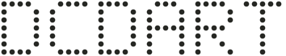

Memory, without the mystery.
The compiler inserts reference counting and removes redundant operations. Objects stay put, so C can work with stable pointers.
 DotCorrDCDart
GitHub ↗
DotCorrDCDart
GitHub ↗
The familiarity of Dart. The control of a systems language. Ahead-of-time compilation, automatic reference counting, and a direct line to C.

@bare u64 add(u64 a, u64 b) { return a + b; }
A working subset of Dart, built for systems code. Explicit where it matters. Readable where it counts.
The compiler inserts reference counting and removes redundant operations. Objects stay put, so C can work with stable pointers.
Fixed-width integers. Explicit conversions. Arithmetic that traps on overflow by default. Control that survives compilation.
Compile to object files and link with C. Freestanding code can live in firmware, kernels, or the native library you are building next.
This function was compiled by DCDart to WebAssembly. Change the number and run it on your own machine, right here.
@bare
u64 sumTo(u64 n) {
var i = u64(0);
var total = u64(0);
while (i < n) {
total = total + i;
i = i + u64(1);
}
return total;
}
v0.1.0 is available for macOS on Apple Silicon through the DotCorr Homebrew tap.
Build your first program ↗brew tap dotcorr/tap https://github.com/DotCorr/homebrew-tap brew install dotcorr/tap/dcdart
Compiling source also requires Dart SDK 3.12.2. Use an explicit prelude path, as shown in the setup guide.
The compiler is real; the language is still growing. We publish the limits alongside the code.
| Distribution | Availability | Status |
|---|---|---|
| Homebrew / DotCorr tap ↗ | macOS · Apple Silicon | v0.1.0 / LIVE |
| GitHub Releases ↗ | Archive + Homebrew bottle | v0.1.0 / LIVE |
| npm · pub.dev · crates.io · PyPI | No dcdart package found | NOT LISTED |
| Homebrew core · AUR | No dcdart entry found | NOT LISTED |